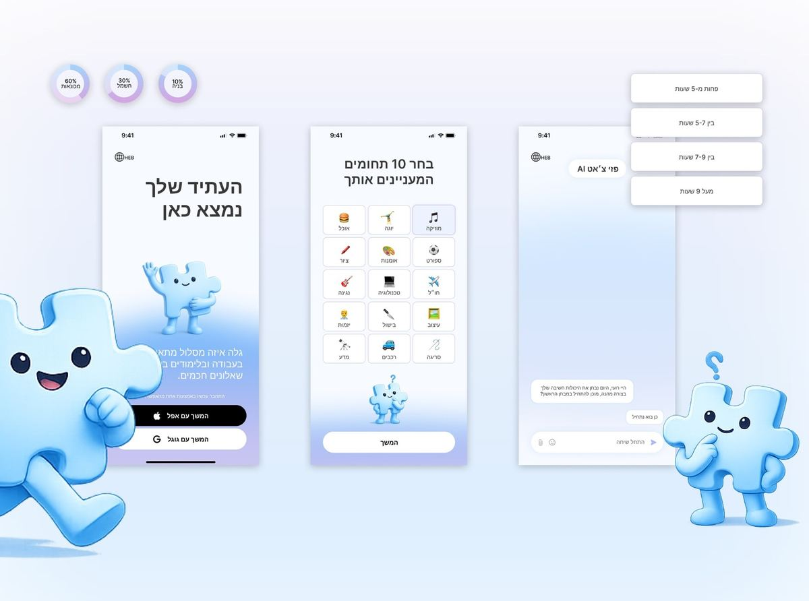

Selected work

Chido
A self-order kiosk for a Mexican street food restaurant: a photo-led, right to left ordering flow that takes a guest from welcome to a customized dish in a few taps.
Read case study →
Pazi
An AI guided mobile app that helps young adults figure out what to study or work in next, replacing guesswork with a personal, game like diagnostic.
Read case study →
FilmRoll
A digital disposable camera for weddings, designed and built solo end to end: guests shoot on a shared roll styled like real film, no cameras to buy or lose.
Read case study →
Austrip
A full UI/UX overhaul of the Austrip travel booking platform, focusing on usability and conversion optimization, transforming a fragmented experience into an intuitive, high-converting journey.
Read case study →